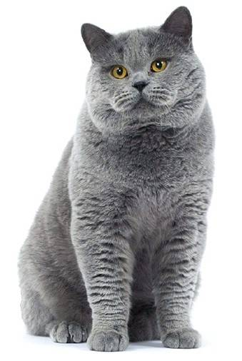

Resume
В прошлой жизни я была великим полководцем, который покорял страны. В этой жизни я просто кошка, которая покоряет сердца.
Experience
-
2015
- Научилась ходить в лоток
- Поймала свою первую мышь (как потом оказалось, это был хомяк)
-
2016
- Впервые разодрала обои
- Научилась использовать когтеточку
- Научилась включать свет на кухне(пока не знаю зачем)
-
2017-2020
- Работала моделью для своего инстаграма
Personal life
-
September 2015
Родилась в большой семье
-
December 2015
Переехала к своей нынешней хозяйке
-
March 2017
Pоман с соседским котом по имени Кузя
-
May 2017
Родилось 3 котенка
-
April 2018
Pоман с соседским котом по имени Мурзик
-
June 2018
Родилось 2 котенка
-
March 2019
Вернулась к Кузе
-
May 2019
Родилось 3 котенка
-
На данный момент не состоит в отношениях
Languages💬
Skills🐾
- Залезть на 5-метровое дерево
- Слезть с 5-метрового дерева
- Игнорировать наличие еды в миске на профессиональном уровне
- Будить хозяйку (не всегда в нужное время)
- Убивать мышей (пока что только игрушечных)
- Переворачивать вазоны на дорогие ковры
- Радовать всех своей мягкостью и пушистостью
- Прекрасный психолог
Character🐈
- Малоподвижная (в основном днем) и гиперактивная (в основном ночью)
- Эмоциональная
- Пушистая
- Послушная (нет)
- Симпатичная (по версии соседских котов и хозяйки)
- Стратег
- Интересный собеседник (в основном слушатель)
- Прекрасный психолог
- Обладатель самого громкого голоса во всем дворе
Likes😸
- Консерва для кошек RENAL FELINE CHICKEN ROYAL CANIN Pouches (да это рекламная интеграция, а что?)
- Тот милый кот из мультфильма Том и Джерри
- Любимый плед моей хозяйки
- Персики
- Пить из кружки хозяйки
- Засыпать в самых неожиданных местах
- Игрушечная мышь
- Устраивать охоту на елку
Dislikes😾
- Принимать ванну
- Соседский пес
- Стричь когти
- Когда миска не заполнена на 100%
- Пылесос
- Маленькие братья и сестры хозяйки
- Радовать всех своей мягкостью и пушистостью
- Комочки шерсти
Wants😻
Больше еды….или поймать ту красную точку, которую магическим образом создает моя хозяйка… или перевернуть горшок с орхидеей… я на самом деле еще не решила чего хочу.